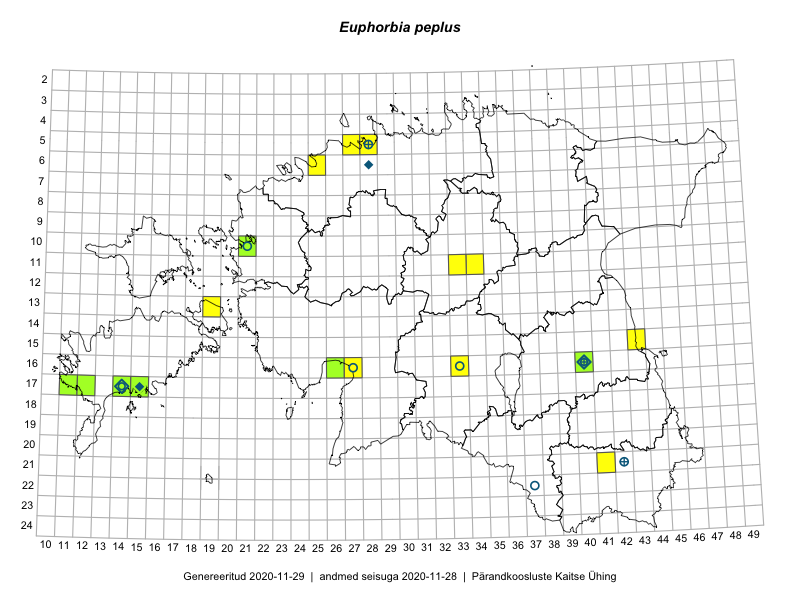

Euphorbia peplus
Uuendatud: 2016-12-07
Kaardile koondatud taksonid: Euphorbia peplus L.

Kaart põhineb 10 vaatlusel. Taime on leitud 7 ruudust.
| Ruut | Vaatleja(d) | Vaatlusaeg | Kirje tüüp | Viide andmebaasikirjele |
|---|---|---|---|---|
| 11-33 | Tõnu Ploompuu, Marko Veinbergs, Eerik Leibak | 2016-07-22 | punkt | vaata PlutoFis |
| 06-25 | Sander Laherand | 2016-08-15 | punkt | vaata PlutoFis |
| 16-40 | Peedu Saar | 2016-08-21 | punkt | vaata PlutoFis |
| 17-14 | Toomas Kukk | 2016-08-13 | punkt | vaata PlutoFis |
| 21-41 | Sander Laherand | 2016-09-07 | punkt | vaata PlutoFis |
| 16-40 | Peedu Saar | 2016-09-19 | punkt | vaata PlutoFis |
| 16-27 | Tiit Hallikma, Tõnu Ploompuu | 2016-07-20 | punkt | vaata PlutoFis |
| 17-14 | Mari Reitalu | 2016-08-07 | ruut/ala | vaata PlutoFis |
| 16-40 | Meeli Mesipuu | 2016-10-03 | punkt | vaata PlutoFis |
| 05-28 | Peedu Saar | 2016-10-22 | punkt | vaata PlutoFis |